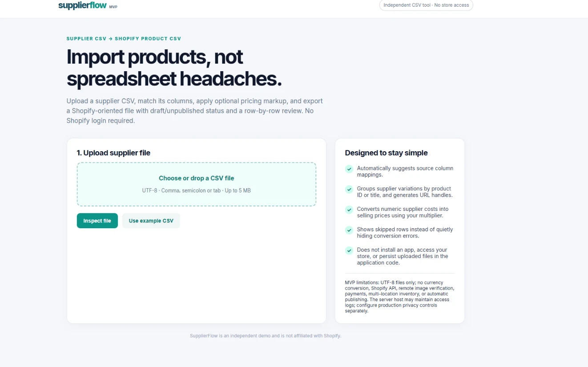
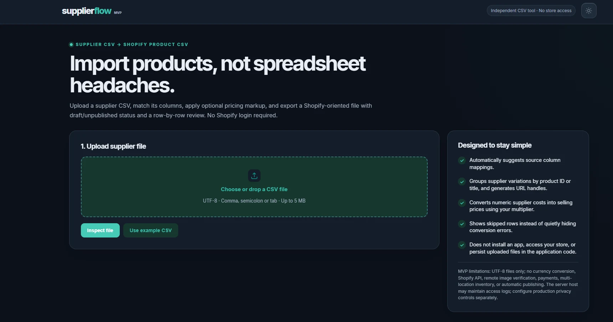
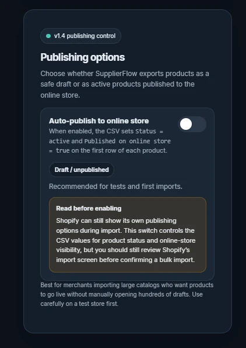
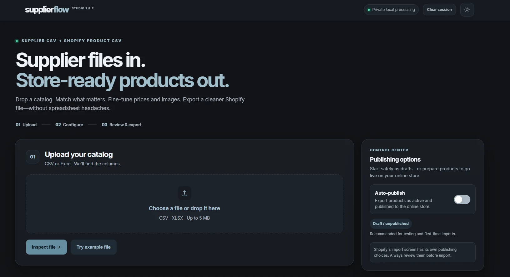

01 / THE BEGINNING
The first MVP.
A simple, bright interface focused on a single job: upload supplier data and prepare a Shopify-oriented file.
INITIAL MVP
Supplier spreadsheets are messy. Preparing products for a store shouldn't have to be. See how SupplierFlow changed, from the first upload page to a more complete Studio.
See the story ↘THE EVOLUTION
A few key moments from the first MVP to the latest completed update.
A simple, bright interface focused on a single job: upload supplier data and prepare a Shopify-oriented file.
INITIAL MVP
We tried a new look while keeping the simple upload flow.
MVP DARK EXPLORATION
Draft and active product choices became easier to understand.
v1.4
The upload steps and publishing options came together in one clear screen.
v1.8.2 · LOCAL CANDIDATE
Better file handling, more stable page reloads and clearer account checks for private local testing.
The latest screenshot shown is from v1.8.2; a v1.9.0 image has not been added yet.